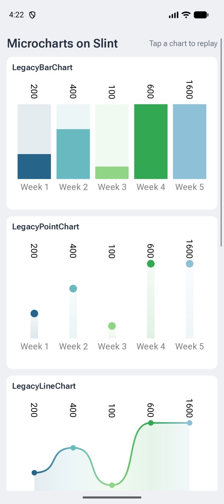
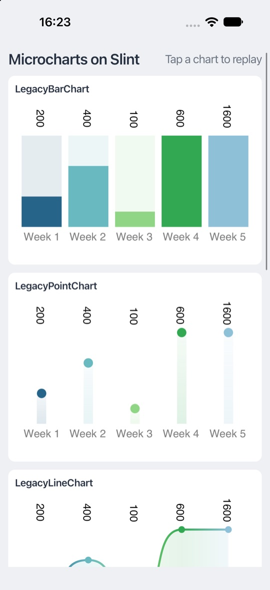
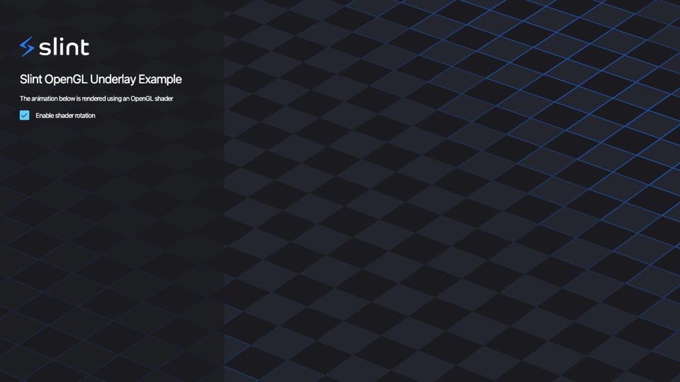
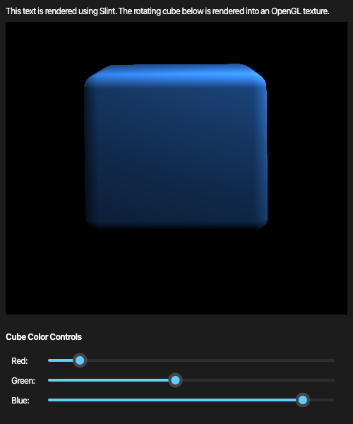
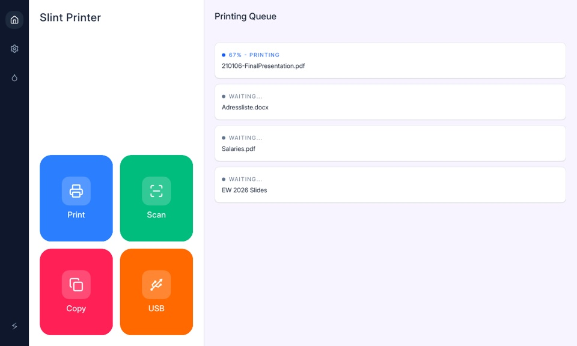
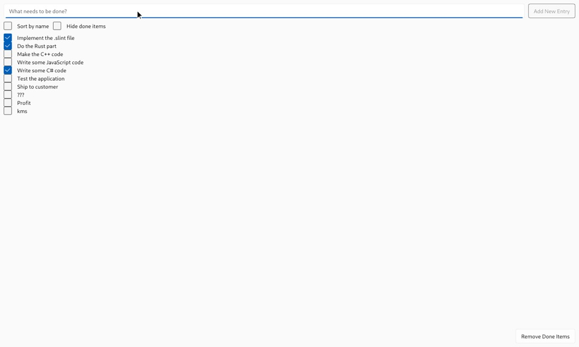
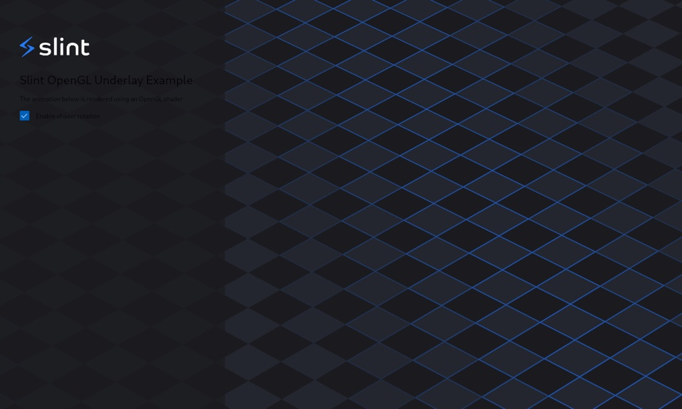

Slint for .NET
Community .NET bindings for the Slint UI toolkit, in preview.
yurkinh.slint.net 1.19.0-preview.10 · .NET 10
Overview
Slint is a declarative UI toolkit: you describe the UI in .slint files
and write the application logic in another language.
These bindings let you write that logic in C# on .NET 10.
- The build generates typed C# classes from your
.slintfiles, so properties and callbacks are checked by the compiler. - Change the UI and the C# code of a running application with hot reload.
- The packages ship native binaries for macOS, Linux, and Windows, on x64 and arm64, for Android, and from 1.19.0-preview.10 for iOS.
- The library is compatible with trimming and Native AOT.
The packages are yurkinh.slint.net
and yurkinh.slint.net.Compiler, which the first one pulls in.
Slint for .NET is a preview: its APIs may still change.
For a tour of what the bindings can do, read Slint ♥ .NET.
Quick Start
Install the .NET 10 SDK.
With a Template
From 1.19.0-preview.10.
dotnet new install yurkinh.slint.net.Templates
dotnet new slint -o MyApp
cd MyApp
dotnet runThe template creates a ready app:
MyApp.csproj,Program.cs, andui/app-window.slintwith the counter below, and a.gitignore.- Debug builds turn on live preview, so
dotnet watchreloads changes to the UI and the C# code. - Release builds turn on Native AOT:
dotnet publish -c Release -r osx-arm64builds a native executable. --style fluent,material,cupertino, orcosmicpicks the widget style, and--slint-versionthe version of the package.
The package has four templates:
| Template | Creates |
|---|---|
slint | A desktop app for macOS, Linux, and Windows. |
slint-android | An Android app; needs the .NET Android workload. |
slint-ios | An iOS app; needs the .NET iOS workload and a Mac. |
slint-xplat | A solution with a desktop, an Android, and an iOS project that share the UI and the logic. |
--app-id com.example.myapp sets the Android package name and the iOS bundle ID.
slint-xplat puts the UI in ui/, the C# that the platforms share in Shared/,
and the settings that they share in Directory.Build.props.
Each project generates its own classes from the .slint files.
Without the Android or iOS workload, pick the projects with --platforms:
dotnet new slint-xplat -o MyApp --platforms desktop --platforms androidBy Hand
-
Create a project and add the package:
dotnet new console -o MyApp cd MyApp dotnet add package yurkinh.slint.net --prerelease -
Create
ui/app-window.slint:import { Button, VerticalBox } from "std-widgets.slint"; export component AppWindow inherits Window { in-out property <int> counter: 42; callback request-increase-value(); VerticalBox { Text { text: "Counter: \{root.counter}"; } Button { text: "Increase value"; clicked => { root.request-increase-value(); } } } } -
Add it to
MyApp.csproj:<ItemGroup> <SlintFile Include="ui/app-window.slint" /> </ItemGroup> -
Replace
Program.cs:using MyApp; internal static class Program { // Windows needs this for the window, see Threading. [STAThread] private static void Main() { using var app = AppWindow.Create(); app.OnRequestIncreaseValue(() => app.Counter++); app.Run(); } } Run it with
dotnet run.
Project Setup
Each <SlintFile> item in the project file generates C# code at build time.
Mark files that another <SlintFile> only imports with Generate="false":
<ItemGroup>
<SlintFile Include="ui/app-window.slint" />
<SlintFile Include="ui/widgets.slint" Generate="false" />
</ItemGroup>These MSBuild properties change the generated code:
| Property | Meaning |
|---|---|
SlintNamespace | The namespace of the generated classes, instead of the root namespace. |
SlintStyle | The widget style, such as fluent, material, or cupertino. |
SlintCopyToOutput | false loads the .slint files from the project directory instead of copying them to the output. |
SlintIncludePaths | Directories that imports search, separated by semicolons. |
SlintLivePreview | true reloads the UI when a .slint file changes, see Hot Reload. |
SlintTranslationDomain, SlintBundledTranslations | Bundle translations, see Translations. |
For imports from a library, such as import { Button } from "@mylib/button.slint", add a library path, relative to the project:
<ItemGroup>
<SlintLibraryPath Include="mylib" Path="../mylib/" />
</ItemGroup>
The generated code loads the .slint files at run time,
so the build copies them to the output directory, next to the application.
Project Files and Editions
A slint-project.json
sets the Slint edition of a project, its main file, and its include and library paths.
The edition decides which language fixes apply, such as layout fixes from Slint 1.19.
To use one, add the project directory instead of a file:
<ItemGroup>
<SlintProject Include="ui" />
</ItemGroup>{
"slint-edition": "1.19",
"main": "app-window.slint",
"include-paths": ["shared"]
}
The build generates the classes of the main file, and copies the project file and the .slint files under the directory.
The application compiles with the project's edition and paths, both at build time and at run time, and live reload works the same way.
Use <SlintProject Include="." /> for a project file next to the .csproj.
SlintIncludePaths and <SlintLibraryPath> don't apply to a project, since its project file has its own paths.
A <SlintFile> compiles without a project file, and so without an edition.
Generated Code
For each <SlintFile>, the build generates C# types in the project's root namespace:
| Slint | C# |
|---|---|
| exported component | a class with a static Create() method, plus Show(), Hide(), Run(), and Window |
| global | a class, available as a property of each component |
in, out, and in-out properties | properties; out properties are read-only |
| function | a method |
callback clicked | OnClicked(handler) to set the handler, and InvokeClicked(...) to call it |
| struct | a record with init properties |
| enum | an enum |
Names become PascalCase: request-increase-value becomes RequestIncreaseValue.
A component exported under another name too, such as with export { AppWindow as MainWindow },
gets a class for each name.
The types map as follows:
| Slint | C# |
|---|---|
int | int |
float, length, angle, percent | float |
duration | TimeSpan |
string | string |
bool | bool |
color | Slint.Color |
brush | Slint.Brush; a Slint.Color converts to it |
Point | Slint.LogicalPosition |
image | Slint.Image |
keys | Slint.Keys |
styled-text | Slint.StyledText |
data-transfer | Slint.DataTransfer |
[T] | Slint.Model<T> |
built-in enums, such as TextWrap | Slint.EnumValue |
Numbers convert to integers with saturation and truncation, like in Slint.
When you rebuild after changing a .slint file, the generated classes change with it;
at run time, the generated code checks that the file still matches, and throws a SlintException if it doesn't.
Generating the Code by Hand
The build runs slint-compiler for each <SlintFile>.
Run it yourself to generate the code in a script, or for a project that doesn't use the package's MSBuild targets:
slint-compiler -f csharp ui/app-window.slint -o AppWindow.g.cs \
--csharp-namespace MyApp \
--csharp-runtime-path ui/app-window.slint--csharp-namespacesets the namespace of the generated classes.--csharp-runtime-pathis where the generated code loads the.slintfile at run time, relative to the application directory. Copy the.slintfiles there, as the build does.- For a project file, pass its directory instead of a file, and the directory as the runtime path.
The other settings map to options:
| Setting | Option |
|---|---|
SlintStyle | --style fluent |
SlintIncludePaths | -I <dir>, once per directory |
<SlintLibraryPath> | -L mylib=../mylib/ |
SlintTranslationDomain | --translation-domain <domain> |
SlintBundledTranslations | --bundle-translations <dir> |
SlintNoDefaultTranslationContext | --no-default-translation-context |
SlintLivePreview | --csharp-live-preview |
The package yurkinh.slint.net.Compiler has the compiler in tools/<rid>/,
such as ~/.nuget/packages/yurkinh.slint.net.compiler/<version>/tools/osx-arm64/slint-compiler.
NuGet doesn't keep its executable bit, so run chmod +x on it first.
Add the generated file to the project with <Compile Include="AppWindow.g.cs" />,
and generate it again when the .slint file changes.
To build with a slint-compiler of your own instead, set SlintCompilerPath to it.
Properties and Callbacks
Given this component:
export component Calculator inherits Window {
in-out property <int> total;
out property <bool> is-negative: total < 0;
callback add(int) -> int;
callback reset();
public function describe() -> string {
return "Total: \{total}";
}
}the generated Calculator class works like this:
using var calculator = Calculator.Create();
calculator.Total = 10;
bool negative = calculator.IsNegative; // out properties are read-only
// A callback with arguments and a return value takes a Func.
calculator.OnAdd(value => calculator.Total += value);
calculator.OnReset(() => calculator.Total = 0);
int result = calculator.InvokeAdd(5); // calls the handler, like Slint does
string text = calculator.Describe(); // public functions are methods
Setting a handler replaces the previous one.
An exception that a handler throws stops the event loop, and Run() throws it again.
Outside the event loop, the call that ran the handler throws it, such as InvokeAdd.
Structs and Enums
Structs become records, and enums become C# enums:
export enum Priority { low, normal, high }
export struct TodoItem {
title: string,
done: bool,
priority: Priority = Priority.normal,
}var item = new TodoItem { Title = "Write the docs" };
// Fields start with the defaults that the struct declares.
Console.WriteLine(item.Priority); // Normal
// Records are immutable; use `with` to change a field.
var finished = item with { Done = true };Records compare by value. To change a row of a model, replace it with a modified copy, as in Models.
Globals
An exported global becomes a class, which each component has as a property:
export global Logic {
in-out property <int> the-value;
pure callback magic-operation(int) -> int;
}
export component App inherits Window {
Text { text: Logic.magic-operation(Logic.the-value); }
}using var app = App.Create();
app.Logic.OnMagicOperation(value => value * 2);
app.Logic.TheValue = 42;Models
Use a ListModel<T> for the rows of a for repeater, or any array property.
Slint updates the UI whenever you change the list:
var todos = new ListModel<TodoItem>();
app.Todos = todos;
todos.Add(new TodoItem { Title = "Write the docs" });
todos[0] = todos[0] with { Done = true };
To show your own data, derive from Model<T>,
and call NotifyRowChanged, NotifyRowAdded, NotifyRowRemoved, or NotifyReset when it changes.
Any IEnumerable<T> also converts to a model, as a copy.
Filter, Sort, Map, and Reverse return views of a model that follow its changes:
app.OpenTodos = todos.Filter(todo => !todo.Done).Sort((a, b) => a.Title.CompareTo(b.Title));
Filter and Sort return a FilterModel and a SortModel.
SourceRow maps a row of the view to its row in the source, such as to edit the item that the user selected,
and Reset applies a condition that changed outside the model, such as a search text:
var prefix = "";
var shown = names.Filter(name => name.StartsWith(prefix));
app.OnPrefixEdited(text => { prefix = text; shown.Reset(); });
app.OnDeleteClicked(() => names.RemoveAt(shown.SourceRow(app.CurrentItem)));Reading an array property gives back the model you set, or a read-only model for an array from the .slint file.
Images
Image.Load loads an image file, and Image.LoadFromData decodes a PNG, JPEG, or SVG in memory, such as a download.
Image.FromRgba8 and Image.FromRgb8 create an image from pixels that you computed,
and ToRgba8 returns the pixels of an image:
var tile = Image.LoadFromData(await http.GetByteArrayAsync(url), "png");
var pixels = original.ToRgba8();
Invert(pixels);
app.Preview = Image.FromRgba8(original.Width, original.Height, pixels);
From 1.19.0-preview.10, Image.FromPremultipliedRgba8 takes pixels whose colors are already multiplied by their alpha,
as SkiaSharp draws them, such as an SKBitmap's GetPixelSpan().
FromRgba8 would show them too dark wherever they're semi-transparent.
Charts With Microcharts
Needs 1.19.0-preview.10 or later.
Microcharts draws bar, line, point, donut, pie, radar, and gauge charts with SkiaSharp,
for MAUI and the native iOS and Android views.
Microcharts.Slint, in the slint branch of the fork until Microcharts takes it in,
shows them in a Slint Image: a ChartRenderer draws the chart at the element's size in physical pixels,
and hands the pixels to Image.FromPremultipliedRgba8.
SlintTimer.Install(); // before creating charts, so that they animate on the Slint thread
using var app = AppWindow.Create();
var renderer = new ChartRenderer(app.Window, image => app.SalesChart = image)
{
Chart = new BarChart { Entries = entries },
};
app.OnSalesChartResized(renderer.Resize);
app.Run();
The .slint side is a ChartView, an Image that reports its size, from chart-view.slint.
The chart's sizes, such as LabelTextSize, are in logical pixels, like Slint's lengths.
The gallery sample runs on the desktop, Android, and iOS:


Window
Each component has a Window, for the window it shows in:
app.Window.LogicalSize = new LogicalSize(800, 600);
app.Window.IsMaximized = true;
app.Window.OnCloseRequested(() =>
HasUnsavedChanges() ? CloseRequestResponse.KeepWindowShown : CloseRequestResponse.HideWindow);
It has the position and size in logical and physical pixels, the scale factor,
IsFullscreen, IsMaximized, and IsMinimized, and Show, Hide, and RequestRedraw.
DispatchEvent sends input to the window as if it came from the windowing system,
such as the keys of an on-screen keyboard:
app.VirtualKeyboardHandler.OnKeyPressed(key =>
{
app.Window.DispatchEvent(new WindowEvent.KeyPressed(key));
app.Window.DispatchEvent(new WindowEvent.KeyReleased(key));
});
A component that inherits SystemTrayIcon has no window:
its class has Show and Hide, which show and hide the icon, but no Window or Run.
Drawing With OpenGL
From 1.19.0-preview.9.
Draw with OpenGL below or on top of the scene, or into a texture that an Image shows.
Require a renderer that uses OpenGL before any other use of Slint, then set a rendering notifier on the window:
new BackendSelector().RequireOpenGL().Select();
using var app = AppWindow.Create();
app.Window.SetRenderingNotifier((state, api) =>
{
switch (state)
{
case RenderingState.RenderingSetup:
// Load the OpenGL functions, such as with api.GetProcAddress("glDrawArrays"), and create resources.
break;
case RenderingState.BeforeRendering:
// Draw below the scene, or into a texture:
// app.Texture = Image.FromBorrowedOpenGLTexture(texture, width, height);
break;
case RenderingState.RenderingTeardown:
// Release the resources.
break;
}
});
app.Run();- The notifier runs on the Slint thread with the window's OpenGL context current, so restore the state that it changes, such as the bound program and buffers.
GraphicsApiis valid during the call only, while the function addresses stay valid with the context, so load the functions once, inRenderingSetup.- Call
app.Window.RequestRedraw()inBeforeRenderingfor a continuous animation. SetRenderingNotifierthrowsNotSupportedExceptionwhen the renderer doesn't use OpenGL. WGPU and Metal give C# no access to Slint's device, so drawing with them isn't available.

opengl_underlay: a shader draws below the scene.
opengl_texture: a cube rendered into a texture that an Image shows.Timers and Async Code
Use Slint.Timer to run code after a delay, or repeatedly:
using var timer = new Slint.Timer();
timer.Start(TimerMode.Repeated, TimeSpan.FromSeconds(1), () => app.Counter++);
Slint.Timer.SingleShot(TimeSpan.FromMilliseconds(500), () => app.Status = "Ready");
The name is Slint.Timer, since System.Threading.Timer is also in scope with implicit usings.
While the event loop runs, await continues on the Slint thread,
so async callbacks can update properties after awaiting:
app.OnRefresh(async () =>
{
var data = await httpClient.GetStringAsync(url);
app.Status = data;
});
From another thread, call EventLoop.InvokeFromEventLoop to run code on the Slint thread.
To run an async main function, call EventLoop.Run(async () => { ... }), which returns when the function completes.
Threading
Slint objects belong to the thread that first uses Slint.
Use them from that thread only, and make it the main thread: the one that runs Main.
macOS requires the event loop on the main thread.
On Windows, mark Main with [STAThread].
The windowing backend sets up OLE for drag and drop, which needs a single-threaded apartment.
Without one, Create and Run throw an InvalidOperationException.
Top-level statements can't take the attribute, so write Main out, as in the Quick Start.
The attribute does nothing on macOS and Linux, so keep it for every platform.
Don't make Main async, since an async Main runs in a multithreaded apartment.
For asynchronous code, call EventLoop.Run(async () => { ... }) from a synchronous Main.
Hot Reload
Change the UI and the code of a running application without restarting it:
.slint files reload through Slint's live reload, and C# code through .NET Hot Reload.
.slint Files
Turn on live reload for Debug builds in your project file:
<PropertyGroup Condition="'$(Configuration)' == 'Debug'">
<SlintLivePreview>true</SlintLivePreview>
</PropertyGroup>
The generated code then loads the .slint files from the project directory,
and each component reloads in its window when you save a file it uses.
The properties and callbacks you set, models included, carry over to the new version.
A file with errors keeps the previous version until you fix it.
To reload a single file, set LivePreview="true" on its <SlintFile> instead.
ComponentInstance.Reloaded tells you when a component reloaded.
C# Code
Run dotnet watch, or start the application in the debugger of Visual Studio, VS Code with C# Dev Kit, or Rider,
and apply changes with the IDE's Hot Reload command.
A handler you passed to an On… method runs the new code from its next call.
Both at Once
With SlintLivePreview on, run dotnet watch.
Saving a .slint file reloads the UI, and saving a .cs file applies the C# change, both without losing the state of the application.
What Needs a Restart
- Renaming or removing a property, callback, or function that your C# code uses.
The reload prints a warning for each member it can't set again,
and the generated classes keep the old members, which throw
SlintExceptionuntil you rebuild. - A C# change that .NET Hot Reload can't apply, such as a new method signature or a new type.
- Changes to the project file, such as turning
SlintLivePreviewon or off.
Use live reload during development only.
Translations
Mark strings for translation with @tr() in .slint files. To bundle gettext .po files into the application, set:
<PropertyGroup>
<SlintTranslationDomain>myapp</SlintTranslationDomain>
<SlintBundledTranslations>translations</SlintBundledTranslations>
</PropertyGroup>The build bundles translations/<language>/LC_MESSAGES/myapp.po. After creating a component, switch the language at run time:
Translations.SelectBundledTranslation("de");
An empty string selects the strings as written in the .slint file.
To translate with your own code instead, implement ITranslator and pass it to Translations.SetTranslator.
Without Generated Code
Compiler compiles .slint files at run time,
and ComponentInstance accesses properties, callbacks, and functions by name.
Use it for UIs that you only know at run time, such as plug-ins or user-provided files:
using var compiler = new Compiler();
using var result = compiler.BuildFromPath("app-window.slint");
if (result.HasErrors)
{
foreach (var diagnostic in result.Diagnostics)
{
Console.Error.WriteLine(diagnostic);
}
return;
}
using var definition = result.Component("AppWindow")!;
using var app = definition.Create();
app.SetCallback("request-increase-value", _ => app.SetProperty("counter", (double)app.GetProperty("counter")! + 1));
app.Run();
Untyped values are double for numbers, string, bool,
Slint.Struct for structs, Slint.EnumValue for enums, and Slint.Model<object?> for arrays.
BuildFromSource compiles a string, and Compiler has the style, include paths, and library paths as properties.
Lifetime and Errors
Components, timers, images, and compilation results hold native resources; dispose them, such as with using.
Slint holds the delegates you pass to On… methods, so a handler that captures its own component keeps it alive
until you dispose the component.
Failures in Slint throw SlintException, such as a .slint file that doesn't compile at run time,
a generated class that no longer matches its file, or a property that doesn't exist.
Android
From 1.19.0-preview.7.
The package also runs on Android 8 (API level 26) and later, on arm64-v8a and x86_64 devices and emulators.
Slint draws into a NativeActivity and runs its event loop on a thread of its own, as in the C++ API.
From 1.19.0-preview.10, dotnet new slint-android -o MyApp creates the app in one step,
see With a Template.
Then dotnet build -t:Run installs it on the running emulator or the connected device.
To set up the project yourself:
-
Install the .NET Android workload, then create a project and add the package:
dotnet workload install android dotnet new android -o MyApp cd MyApp dotnet add package yurkinh.slint.net --prerelease -
In
MyApp.csproj, changeSupportedOSPlatformVersionto 26, add the runtime identifiers that Slint has libraries for, and add your.slintfile:<PropertyGroup> <SupportedOSPlatformVersion>26</SupportedOSPlatformVersion> <RuntimeIdentifiers>android-arm64;android-x64</RuntimeIdentifiers> </PropertyGroup> <ItemGroup> <SlintFile Include="ui/app-window.slint" /> </ItemGroup>The template already sets
SupportedOSPlatformVersionto 24: change that line rather than adding a second one. -
Create
ui/app-window.slint, the same as in the Quick Start:import { Button, VerticalBox } from "std-widgets.slint"; export component AppWindow inherits Window { in-out property <int> counter: 42; callback request-increase-value(); VerticalBox { Text { text: "Counter: \{root.counter}"; } Button { text: "Increase value"; clicked => { root.request-increase-value(); } } } }Without a
<SlintFile>item for it, the build generates noAppWindowclass, and fails with "The name 'AppWindow' does not exist". -
Replace
MainActivity.cs: derive the main activity fromSlintActivity, and create the components inSlintMain:using Slint.Android; namespace MyApp; [Activity(MainLauncher = true, ConfigurationChanges = SlintActivity.ConfigurationChanges)] [MetaData(SlintActivity.LibraryNameKey, Value = SlintActivity.LibraryName)] public class MainActivity : SlintActivity { protected override void SlintMain() { using var app = AppWindow.Create(); app.OnRequestIncreaseValue(() => app.Counter++); app.Run(); } }Both attributes are needed, since .NET Android only reads them from your own activity. The template's
Resources/layout/activity_main.xmlis no longer used, and you can delete it. -
Connect a device with USB debugging, or start an emulator, and run the app:
dotnet build -t:RunTo install the APK of a Debug build with
adb installinstead, set<EmbedAssembliesIntoApk>true</EmbedAssembliesIntoApk>, since a Debug build leaves the assemblies out of the APK otherwise.
SlintMainand every callback run on Slint's thread, not on the Android UI thread.- An app has one
SlintActivity, which ends the process when Android destroys it, such as after the Back button. - The build puts the
.slintfiles into the APK, andSlintActivityextracts them at startup. Add the images they use as<SlintFile Include="ui/images/logo.png" Generate="false" />, under the project directory.
Keeping State
From 1.19.0-preview.8.
Android also ends the process of an app in the background when it needs memory, and starts a new one when the user returns.
To keep what the user was doing, return it from SlintSaveState, and take it back in SlintRestoreState:
protected override byte[]? SlintSaveState() => JsonSerializer.SerializeToUtf8Bytes(settings);
protected override void SlintRestoreState(byte[] state) => Apply(JsonSerializer.Deserialize<Settings>(state));
SlintRestoreState runs once, in the event loop, after SlintMain created the components.
SlintPause, SlintResume, and SlintLowMemory report the other activity events,
all on Slint's thread, unlike OnPause and the other methods of Activity.
Android drops the saved state when the user closes the app, so keep what must outlast that in files or preferences.
See the todo example for Android, which shares its logic with the desktop version and keeps its list this way.
iOS
From 1.19.0-preview.10.
The package also runs on iOS 15 and later, with Skia on Metal, on devices and in the simulator; it's tested on an iPhone 13.
As on Android, Slint owns the app's entry point: there's no AppDelegate and no UIApplication.Main.
dotnet new slint-ios -o MyApp --app-id com.example.myapp creates the app, see With a Template.
To set up the project yourself:
-
Install the .NET iOS workload, with
dotnet workload install ios, and create a project fornet10.0-ioswith your.slintfile:<Project Sdk="Microsoft.NET.Sdk"> <PropertyGroup> <TargetFramework>net10.0-ios</TargetFramework> <SupportedOSPlatformVersion>15.0</SupportedOSPlatformVersion> <OutputType>Exe</OutputType> <ApplicationId>com.example.myapp</ApplicationId> </PropertyGroup> <ItemGroup> <SlintFile Include="ui/app-window.slint" /> </ItemGroup> <ItemGroup> <PackageReference Include="yurkinh.slint.net" Version="1.19.0-preview.10" /> </ItemGroup> </Project> -
Add an
Info.plistthat names Slint's scene delegate, which iOS 27 requires, like the one of the todo example:<key>UIApplicationSceneManifest</key> <dict> <key>UIApplicationSupportsMultipleScenes</key> <false/> <key>UISceneConfigurations</key> <dict> <key>UIWindowSceneSessionRoleApplication</key> <array> <dict> <key>UISceneConfigurationName</key> <string>Slint</string> <key>UISceneDelegateClassName</key> <string>SlintWindowSceneDelegate</string> </dict> </array> </dict> </dict> -
Create the components in
Main, and callRun, where Slint starts the app and doesn't return:internal static class Program { private static void Main() { using var app = AppWindow.Create(); app.OnRequestIncreaseValue(() => app.Counter++); app.Run(); } } -
Build and start it in the simulator, or with
-r ios-arm64and a signing identity on a device:dotnet build -t:Run
- The build embeds Slint's framework into the app, and puts the
.slintfiles into the app bundle. SlintLivePreviewisn't available on iOS yet; the build ignores it, with the warningSLINT002.-
iOS ends apps in the background without notice. Keep what the user was doing when the app leaves the screen,
with the UIKit notifications of .NET for iOS, which arrive on the Slint thread:
Read the file back aftervar file = Path.Combine(Environment.GetFolderPath(Environment.SpecialFolder.MyDocuments), "state.json"); using var observer = UIKit.UIApplication.Notifications.ObserveDidEnterBackground((_, _) => File.WriteAllBytes(file, SaveState(app)));Create, as the todo example does. -
Native AOT works on devices: set
<PublishAot>true</PublishAot>in the project file, not with-p:, which would also apply it to the Slint libraries, and rundotnet publish -c Release -r ios-arm64. Builds for the simulator keep using Mono.
Deployment
Publish the application for a runtime identifier, which picks the native library of that platform:
dotnet publish -c Release -r osx-arm64
dotnet publish -c Release -r win-x64 --self-contained
dotnet publish -c Release -r linux-x64 -p:PublishAot=trueThe packages have native binaries for these runtime identifiers:
| Platform | Runtime identifiers |
|---|---|
| macOS | osx-arm64, osx-x64 |
| Linux | linux-x64, linux-arm64 |
| Windows | win-x64, win-arm64 |
| Android, from 1.19.0-preview.7 | android-arm64, android-x64 |
- The application loads the
.slintfiles, and the images they use, at run time. The build copies the.slintfiles to the output; ship the images too, at the same paths relative to them. - On Windows, set
<OutputType>WinExe</OutputType>to start without a console window. - On Linux, the windowing backend loads
libxkbcommon-x11at run time, so install it on the target system.
Embedded Linux
On a device without a desktop, such as a board with a touchscreen,
Slint draws straight to the display with its linuxkms backend, and reads input with libinput.
Publish for the device's runtime identifier, and start the app on its console:
dotnet publish -c Release -r linux-arm64 --self-contained
SLINT_BACKEND=linuxkms ./MyApp- Give the app access to
/dev/driand/dev/input: run it as root, or add its user to thevideoandinputgroups. - Stop the desktop first, if the device has one, since it holds the display.
linuxkmspicks a renderer;linuxkms-software,linuxkms-femtovg, andlinuxkms-skia-openglchoose one.- The device needs libinput and libudev, and for OpenGL, GBM and EGL, which the app loads at run time.
- In 1.19.0-preview.9 and earlier, the OpenGL renderers fail with "Error adding gbm buffer as framebuffer"
on display drivers without modifier support, such as
virtio-gpuin virtual machines. Uselinuxkms-softwarethere, or 1.19.0-preview.10 and later.
We tested it on an arm64 Kali Linux virtual machine in UTM on a Mac, with the samples published from the package: every sample runs with the software renderer, typing and clicking work through libinput, and with the fix of 1.19.0-preview.10, the OpenGL renderers and the OpenGL samples render too. See Slint's LinuxKMS guide for the renderers and display settings.



Building From Source
Build the native library, the compiler, and the packages yourself for a platform or a change that isn't published.
This needs Rust and a clone of the dotnet_bindings branch.
From the repository root, on an Apple Silicon Mac:
# The native library and the compiler for this machine
cargo build --release -p slint-dotnet -p slint-compiler
# The native library for Android devices, with the NDK's compilers
cargo build --release -p slint-dotnet --target aarch64-linux-android
# One directory per runtime identifier
mkdir -p out/native/osx-arm64 out/native/android-arm64 out/compiler/osx-arm64
cp target/release/libslint_dotnet.dylib out/native/osx-arm64/
cp target/aarch64-linux-android/release/libslint_dotnet.so out/native/android-arm64/
cp target/release/slint-compiler out/compiler/osx-arm64/
cd api/dotnet
dotnet pack Slint.Compiler -c Release -o ../../out/packages -p:Version=1.19.0-local.1 \
-p:SlintCompilerBinariesDir=$PWD/../../out/compiler
dotnet pack Slint -c Release -o ../../out/packages -p:Version=1.19.0-local.1 \
-p:SlintNativeRuntimesDir=$PWD/../../out/native -p:SlintAndroid=true| Platform | Native library | Compiler |
|---|---|---|
| macOS | libslint_dotnet.dylib | slint-compiler |
| Linux | libslint_dotnet.so | slint-compiler |
| Windows | slint_dotnet.dll | slint-compiler.exe |
| Android | libslint_dotnet.so, from target/<triple>/release | none |
- A local pack has the platforms whose binaries you built. The publish workflow builds all eight runtime identifiers on GitHub's runners.
- The Android build needs the NDK's compilers in environment variables,
as in the developer guide.
-p:SlintAndroid=trueneeds the .NET Android workload, fromdotnet workload install android. Leave both out for a desktop-only package. - These packages have the ID
Slint. For another ID, add-p:SlintPackageId=<id> -p:SlintCommunityPackage=trueto bothdotnet packcommands. - Use them from another project through a NuGet source, with
dotnet nuget add source $PWD/out/packages --name slint-local. NuGet caches a version once it installed it, so give each pack a new version.
Environment Variables
| Variable | Meaning |
|---|---|
SLINT_BACKEND | Selects the windowing backend, such as winit, or linuxkms on embedded Linux. |
SLINT_ENABLE_EXPERIMENTAL_FEATURES | Enables experimental Slint language features, at build time and at run time, since the generated code compiles the .slint files again.
Up to 1.19.0-preview.7, 1 enables all of them.
From 1.19.0-preview.8, list the features by name, separated by commas, such as match,closures; 1 is then an error. |
SLINT_DOTNET_NATIVE_LIBRARY | The path of the native library to load instead of the one in the package, such as a local build. |
Troubleshooting
InvalidOperationException about a single-threaded apartment on Windows
Mark Main with [STAThread], and replace top-level statements and async Main with a synchronous Main, see Threading.
"Slint objects can only be used from the thread that first used Slint"
A Task.Run or a thread pool callback touched a component. Use EventLoop.InvokeFromEventLoop to get back to the Slint thread.
"is out of date; regenerate it"
The .slint file next to the application doesn't match the generated code. Rebuild, and ship the .slint files from the same build.
An Android app closes right after it starts
Run adb logcat -s Slint: SlintActivity logs an exception of SlintMain under that tag before the activity ends.
"Error adding gbm buffer as framebuffer" on embedded Linux
The display driver doesn't take buffer modifiers, such as virtio-gpu in a virtual machine.
Run with SLINT_BACKEND=linuxkms-software, or update to 1.19.0-preview.10, see Embedded Linux.
The window doesn't open on Linux
Install libxkbcommon-x11, and check that DISPLAY or WAYLAND_DISPLAY is set.
Samples
Most examples and demos of Slint have a C# version in their dotnet directory,
next to the Rust, C++, Node.js, and Python ones. Run one with dotnet run --project <directory>:
- Memory game: models, records, callbacks, and a timer.
- Todo: sorting and filtering with the model adapters, and a confirmation before closing.
- Todo MVC: controllers, repositories, and adapters for the globals of the UI.
- 7GUIs: a flight booker, CRUD with a filtered list, a circle drawer with undo, and a spreadsheet.
- Widgets gallery: every standard widget, a sortable table, and bundled translations.
- Printer demo: globals, a progress timer, and switching between English and French.
- Energy monitor: live weather from Open-Meteo, timers, and a kiosk mode.
- Weather demo: forecasts and a location search with HttpClient, and a forecast graph.
- Home automation: a large touch UI with a clock.
- Use cases: a mail box with search, an on-screen keyboard, and the cosmic style.
- Slide puzzle: game logic in its own class, and spring animations from a timer.
- Kanban board: drag and drop that carries a C# record in DataTransfer.UserData.
- Image filter: filters on the pixels of an image, in plain C#.
- Plotter: a 3D surface plot rendered into pixels.
- Maps: OpenStreetMap tiles that load as you pan and zoom.
- Virtual keyboard: an on-screen keyboard that sends keys with DispatchEvent.
- System tray: a tray icon and a window that edits it.
- Runtime key bindings: shortcuts that the user records, saved with Keys.ToParts.
- Async I/O: an async callback that awaits HttpClient.
- Launcher: lists the built C# samples and starts them.
- Viewer: shows any .slint file with the Compiler API, optionally with live reload.
- LOLs per second: a port of the LOLs per second performance test, on the desktop and Android. Compare it with Java, .NET for Android, MAUI, and Flutter on your own phone with the comparison script.
- OpenGL underlay and OpenGL texture: drawing with OpenGL below the scene and into a texture, see Drawing With OpenGL.
- Microcharts gallery: charts drawn with SkiaSharp into Slint images, on the desktop, Android, and iOS, see Charts.
- Todo for Android: the todo example in a
SlintActivity, sharing its logic with the desktop version.
The carousel, speedometer, food processor, and analog clock have C# versions too, and the viewer shows the examples that have no logic, such as the layouts.
Releases
What's New lists the changes in each preview.
The packages on nuget.org: yurkinh.slint.net.
The source is in the dotnet_bindings branch.